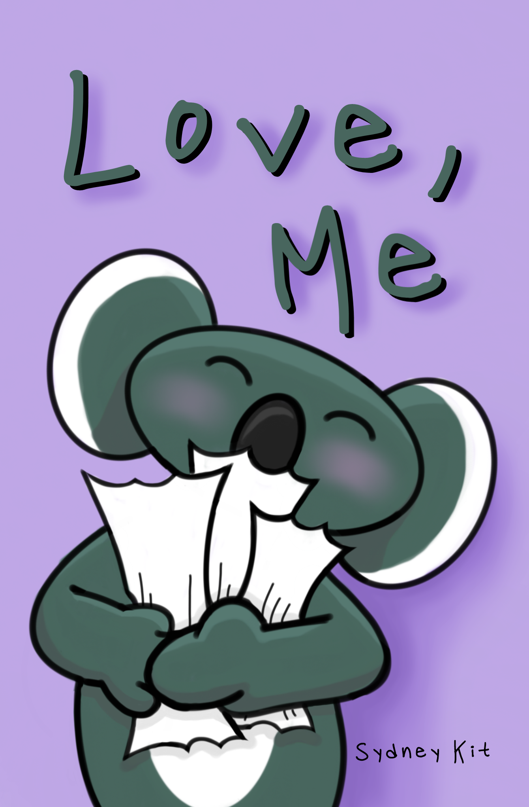

Portfolio
Highlighted Work Gallery Shows Awards Resume
Highlighted Work

Gallery Shows
The Ohio State Unversity Art & Technology Department
"Radicant Bodies" Online Gallery
April 23, 2020-Current
Three works, a page from the Love, Me comic book, Mime Game Prototype, and this website's homepage, were featured "Radicant Bodies" starting April 23, 2021.
Visit Each Page: Love, MePlay the Mime Game PrototypeSydneyKit.com homepage
Columbus Spring Art Fest
hosted by Buckeye Creative Connection
April 18, 2021
Two works, To Be Remembered and Wood Detail, were featured at the 400 W Rich St Gallery in Columbus. The comic book Love, Me was also displayed on a pedestal near the two works.


To Be Remembered won the audience choice award.
Visit Each Page: To Be RememberedWood DetailLove, Me
Buckeye Boundary Breakers Online Gallery
April 7, 2021
The page that discussed American Sign Language (ASL) from the comic book Love, Me was featured.
Visit The Page: Love, Me
The Ohio State University Art & Technology Department
"Can You See My Screen?" Online Gallery
December 4, 2020-Current
Three works, the then named Both Rings, now named To Be Remembered, A Laney Day and How Much Did I Sleep Last Night?, were featured starting December 2020.
Visit Each Page: To Be Remembered (Both Rings)A Laney DayHow Much Did I Sleep Last Night?
The 2020 Anatomy Fashion Show
Hosted by Phi Delta Epsilon OH Zeta at The Ohio State University
February 23, 2020
Sydney Kit was one of the artists selected to paint a model for the fashion show that raised money for Nationwide Children's Hospital.
This was an all day event that involved: getting the models into the suits, painting the respective system, getting the models to the fashion show, and then the walk.
See More: Instagram Post
Hopkins Hall Gallery
April 2019 - December 2019
Two works, Our Biggest Dream and Tongue Tower, were featured in the Hopkins Hall Gallery during the 2019 summer and autumn semesters.
Our Biggest Dream was shown on a big screen during the opening show and continued to be shown on a monitor in the hallway for the rest of the gallery show.
Visit Each Page: Our Biggest DreamTongue Tower
Alpha Rho Chi Student Collective
April 2, 2019
Two works, Hockey Still Life and Replication Sunflowers, were featured.
This was Sydney Kit's first gallery show.
Visit Each Page: Hockey Still LifeReplication Sunflowers
Awards
Audience Choice Award - Columbus Spring Art Fest
Awarded April 18, 2021 to To Be Remembered.
The Fergus Material and Scholarships Fund
Awarded March 24, 2021 for the publication of the Love, Me comic book.
Resume
Socials
Facebook & Instagram: @Sydney.Kit.Anim